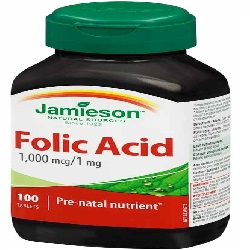

Folic Acid

Folic Acidသည်
- ဗိုက်တာဗင် ဘီ အုပ်စုဝင် ဆေးဖြစ်သည်။
- ဗိုက်တာမင် ဘီသည် ရေတွင် ပျော်ဝင်သော ဗိုက်တာမင် အမျိုးအစား ဖြစ်သည်။
- ဖောလစ်အက်စစ်ကို အသီးအနှံ့များ (ဖရဲသီး သံပုရာ ) ဟင်းသီးဟင်းရွက်များ ပဲအမျိုးမျိုး ကလီစာများ စသော အစာများကို စားခြင်းဖြင့်လည်း ရရှိနိုင်သည်။
- ဖောလစ်အက်စစ် ချို့တဲ့ပါက သွေးအားနည်းတတ်သည်။
အသုံးဝင်ပုံ
- ကျောက်ကပ်ရောဂါသမားများတွင် Homocysteine ဓါတ်များ များနေတတ်သည်။ Homocysteine များပါက နှလုံးရောဂါနှင့် လေဖြတ်ခြင်းကို ဖြစ်စေသည်။
- Folic Acid သည် Homocysteine ကို လျော့နည်းစေခြင်းဖြင့် နှလုံးရောဂါနှင့် လေဖြတ်ခြင်းကို ကာကွယ်ပေးသည်။
- ကိုယ်ဝန်ဆောင် (အဓိက အားဖြင့် ပထမသုံးလ) ချိန်တွင် Folic Acid ပုံမှန် သောက်ခြင်းဖြင့် ကလေးများတွင် မွေးရာပါ အာရုံကြော အားနည်း ချို့တဲ့ခြင်းကို ကာကွယ်ပေးသည်။
- ထို့အပြင် စိတ်ကျခြင်း သွေးပေါင်ချိန်လျော့ချပေးခြင်း သွားဖုံရောဂါများ သက်သာစေခြင်း သွေးကင်ဆာ လက္ခဏာများ သက်သာစေပါသည်။
- အချို့သော လေ့လာမှုများအရ အယ်ဇိုင်းမား အတိတ်မေ့ရောဂါ ဖြစ်ပွားမှု လျော့နည်းခြင်းနှင့် မှတ်ဉာဏ်တွေးခေါ်မှုများ တိုးတက်လာစေပါသည်။
သုံးစွဲပုံ
- ပုံမှန်အားဖြင့် တစ်နေ့ကို ၂၅၀ မှ ၁၀၀၀ မိုက်ခရိုဂရမ် အတွင်းသောက်နိုင်သည်။
- သို့ရာတွင် ရောဂါနှင့် အခြေအနေ ပေါ်မူတည်၍ ပမာဏအနည်းအများ ကွာခြားသည်။
- ကိုယ်ဝန်ဆောင်များတွင် ကိုယ်ဝန်ဆောင်အားဆေးများ သုံးစွဲနေပါက Folic Acid ကို ထပ်သောက်ရန် မလိုပါ။
- သို့မဟုတ် ဆေးမသောက်ချင်ပါက Folic Acid ကြွယ်ဝသော အစားအစာများ စားလျှင်လည်းရသည်။
ဘေးထွက်ဆိုးကျိုးများ
Folic Acid သည် များသောအားဖြင့် ဘေးထွက်ဆိုးကျိုးများ မရှိပါ။ သို့ရာတွင် ပမာဏများများ သောက်မိပါက–
- ဗိုက်အောင့်ခြင်း
- ဝမ်းလျှောခြင်း
- အနီကွက်များထွက်ခြင်း
- ပျို့ခြင်း
- အန်ခြင်း
- ခေါင်းကိုက်ခြင်း စသည်တို့ ဖြစ်တတ်သည်။
သတိပြုရမည့်အချက်များ
- ကိုယ်ဝန်ဆောင်နှင့် နို့တိုက်မိခင်များတွင် ၃၀၀ မှ ၄၀၀ မိုက်ခရိုဂရမ် အတွင်းသာ သောက်သင့်သည်။
- Folic Acid သည် သွေးကြောကျဉ်းနှင့် ကင်ဆာ ရောဂါ သမားများတွင် မသောက်သင့်ပါ။
ဆေးအာနိသင်
Fosphenytoin, Methotrexate, Phenobarbital, Phenytoin နှင့် Pyrimethamine စသော ဆေးများနှင့် တွဲမသောက်သင့်ပါ။
ဆေးအလွန်အကျွံသုံးစွဲခြင်း
- အများအားဖြင့် Folic Acid သည် ရေတွင်ပျော်ဝင်သောကြောင့် ဆေးပမာဏများများ သောက်မိပါက ဆီးထဲမှ စွန့်ပစ်လေ့ရှိသည်။
- Folic Acid ပမာဏများများကို ရေရှည်စွဲသောက်ပါက နှလုံးရောဂါနှင့် အဆုတ်ကင်ဆာ ဖြစ်နိုင်ခြေ ရှိကြောင်း လေ့လာမှု တစ်ခုက ဆိုသည်။
- ဆေးတွေကို ဘယ်ဆေးမဆို ဆရာဝန် ဒါမှမဟုတ် တတ်ကျွမ်းနားလည်တဲ့ ကျန်းမာရေးဝန်ထမ်းတွေရဲ့ ညွှန်ကြားချက်အတိုင်း တိတိကျကျ သောက်သင့်ပါတယ်။
- မိမိသဘောနဲ့ဆေးရပ်လိုက်တာမျိုး မလုပ်သင့်ပါဘူး။
- ဘေးထွက်ဆိုးကျိုး ပြင်းပြင်းထန်ထန် ခံစားရရင်တော့ ဆရာဝန်နဲ့တိုင်ပင်ဖို့ လိုအပ်ပါတယ်။
Source– ဒေါက်တာချစ်စန္ဒီကျော်